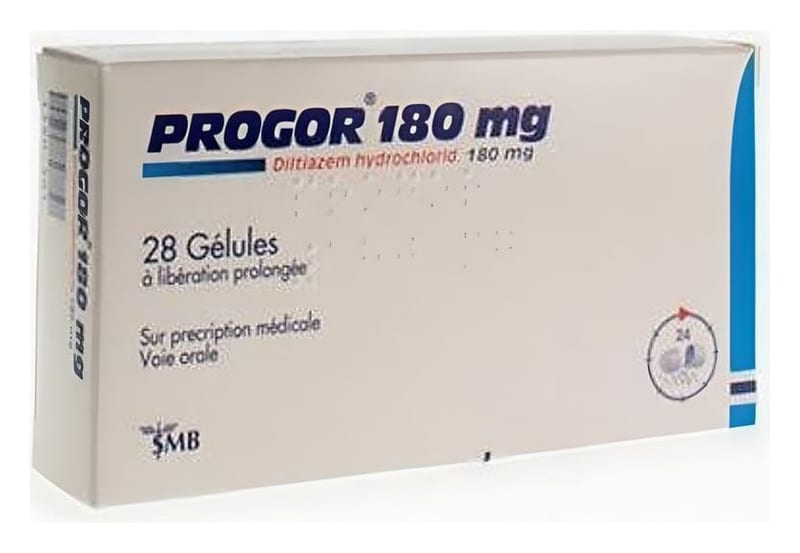

Progor 180 mg Kontrollu Salımlı Mikropellet Kapsül, 28 Adet

Ne için kullanılır
KT · Bölüm 1PROGOR, 180 mg diltiazem hidroklorür etkin maddesi içeren kontrollü salımlı bir mikropellet kapsüldür. PROGOR, kalsiyum kanal blokörleri adı verilen ilaç grubuna dahildir.
PROGOR, 28 kapsül içeren ambalajlarda kullanıma sunulmaktadır.
PROGOR mikropellet kapsül: • Anjina pektorisin (sıklıkla göğüs ağrısı ile kendini gösteren bir kalp ve damar hastalığı) tedavisi ve önlenmesi • Hafif ve orta derecede yüksek kan basıncının tedavisinde kullanılır.